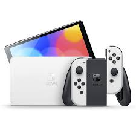
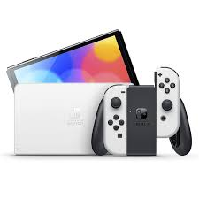

Com início na segunda geração de consoles, aproximadamente entre 1977 e 1985, os grandes videogames portáteis lançados se concentravam na Mattel Eletronic’s Games. Esse vídeo-game oferecia jogos simples de: auto-race, basquete, futebol.
Mattel.
Haviam outras empresas que criaram máquinas de jogos eletrônicos portáteis assim como Mattel: Microvision, Brick Game e Game & Watch. Durante a Quarta Geração de consoles, as marcas mais famosas do mundo iniciaram sua produção de vídeo-games portáteis. Por exemplo, o Sega Game Gear, Game Boy e Atari Lynx - criados respectivamente pela Sega, Nintendo e o Atari.
Game Boy.
Esses aparelhos foram lançados em todo o mundo, durante os períodos entre 1989 a 1992. Alcançaram grande popularidade, principalmente por esse período ser conhecido mundialmente como a Guerra dos Consoles, entre a Sega e Nintendo.
No entanto, na Quinta Geração, apenas a Nintendo continuou a produção dos vídeo-games portáteis, lançando o Game Boy Color. Através da lacuna deste nicho do mercado, lançou-se novos consoles portáteis pelas empresas SNK e Tiger Electronics. Através da Sexta Geração, houve o aprimoramento do Game Boy Color para Game Boy Advance, além do Neo Geo Pocket da SNK.
Game Boy Advance.
Vale ressaltar o N-Gage, lançado pela Nokia, sendo considerado o primeiro celular capaz de emular jogos. A Sexta Geração ocorreu entre 1998 a 2005. Pela Sétima Geração, que percorreu os anos de 2004 e 2010, a Sony entra neste nicho do mercado e lança o PSP e o PSP Go!. Simultaneamente, a Nintendo aumenta sua série lançando: Nintendo DS, Nintendo DS Lite, Nintendo DSi e Nintendo DSi XL.
Game Boy Advance.
Atualmente, estamos na Oitava Geração dos videogames portáteis. Iniciou-se pela Nintendo, com o Nintendo 3DS e logo depois, o Nintendo 3DS XL, e a Sony lançou entre 2011 e 2012 o PS Vita. Há destaque, atualmente, no Nintendo Switch que foi lançado em 2017.